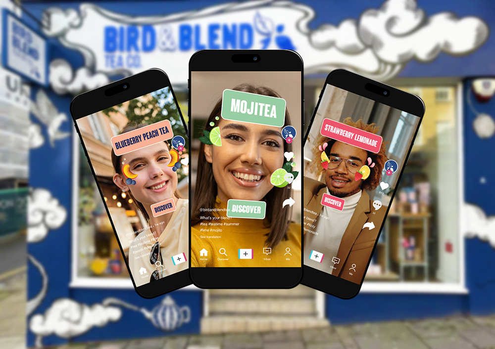
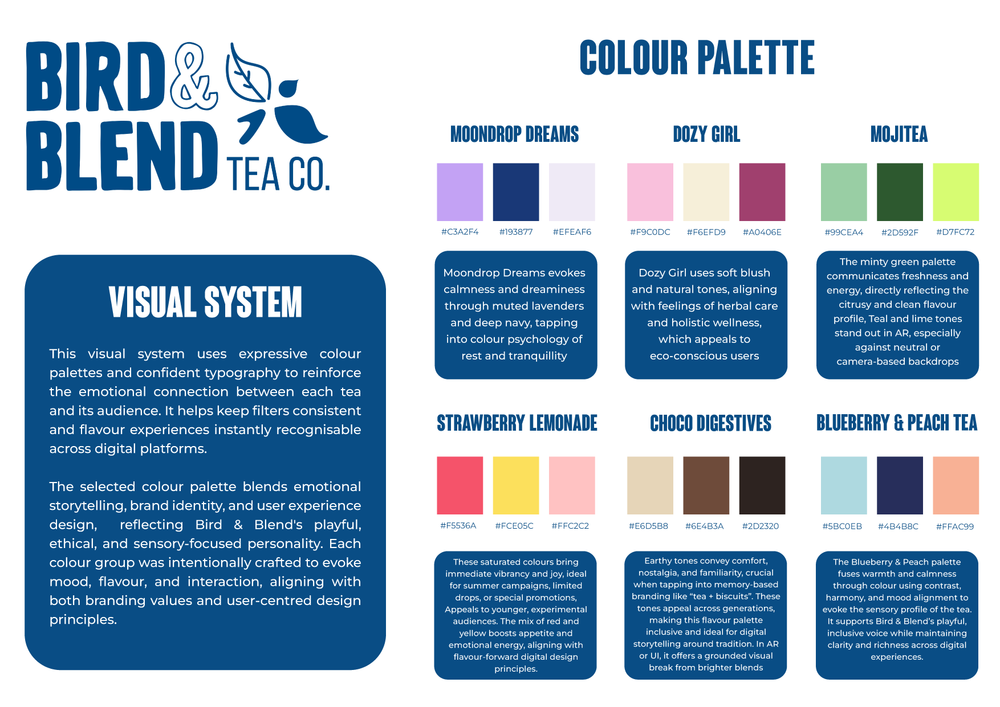
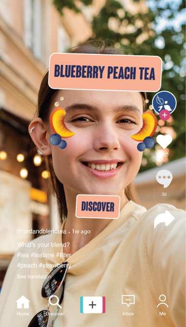
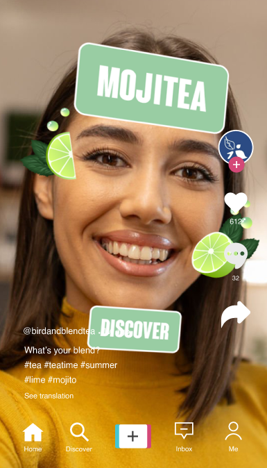
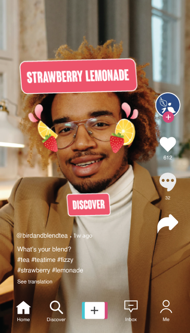

CASE STUDY / BRAND EXPERIENCE DESIGN
Bird & Blend
Tea Co.
Brand experience design
This project focuses on how Augmented Reality (AR) can be used to extend a brand’s personality and create a memorable, playful experience between the brand and the user. Specifically focusing on designing an AR filter concept for Bird & Blend Tea Co., a creative and independent UK tea brand known for its bold, playful and bubbly flavours with a community focused approach.
The purpose of this project is to enhance brand engagement through interactive storytelling and provide customers with a fun, shareable experience on social media, whilst aligning with the brand’s quirky personalised style.

01 / CREATIVE DIRECTION
The visual
system.
A bright, expressive system gives each tea blend its own colour personality while keeping the experience playful and recognisable across the different filters.

02 / AR FILTER CONCEPTS
Flavours in
focus.
Three filter concepts translate the tea flavours into screen-ready experiences, pairing expressive typography with colour and playful ingredient details.



03 / FILTER DEMONSTRATION
In motion.
A short demonstration shows the filter concept in use, bringing the interaction and visual language together in a social-first format.